Part 1 — Perspective vs. Approx. Orthographic
 Perspective projection
Perspective projection
 Approx. orthographic (zoom/crop)
Approx. orthographic (zoom/crop)
Part 2(a) — Histogram Equalization (Provided Images)
Img1 Original
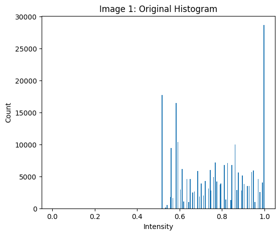Img1 Orig. Hist
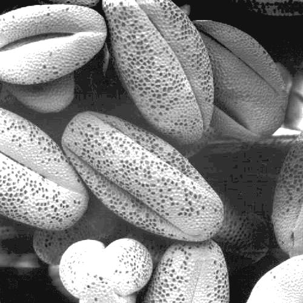Img1 Equalized
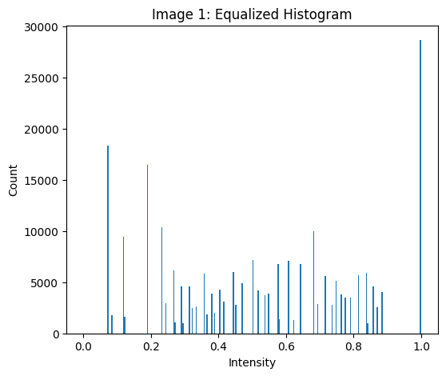Img1 Eq. Hist
Img2 Original
Img2 Orig. Hist
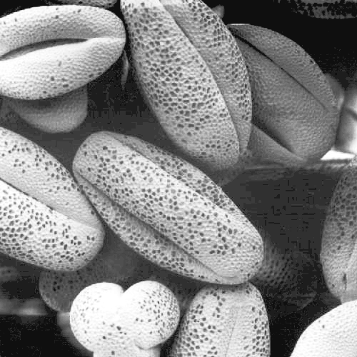Img2 Equalized
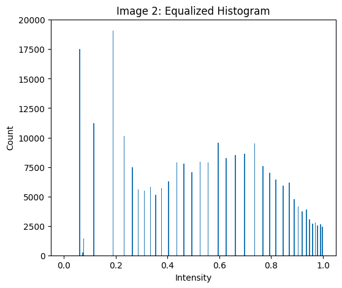Img2 Eq. Hist
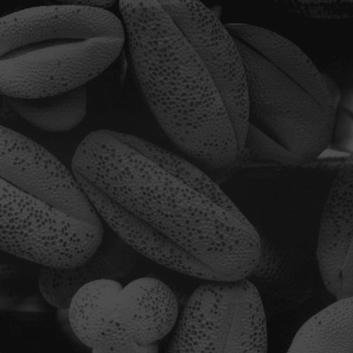Img3 Original
Img3 Orig. Hist
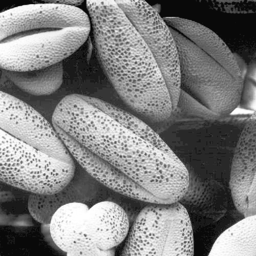Img3 Equalized
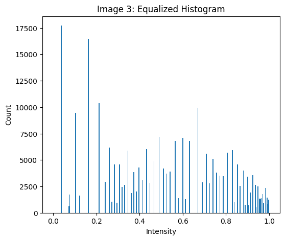Img3 Eq. Hist
Part 2(b) — Equalization on My Photo
 Original
Original
 Original Hist
Original Hist
 Equalized
Equalized
 Eq. Hist
Eq. Hist
Part 2(c) — Histogram Matching
Target
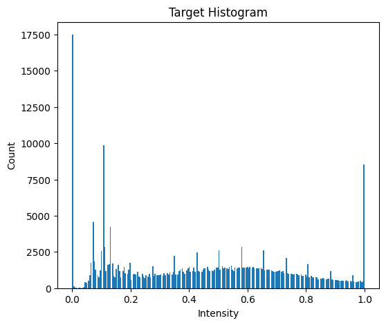Target Hist
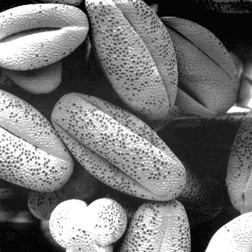Src1 Matched
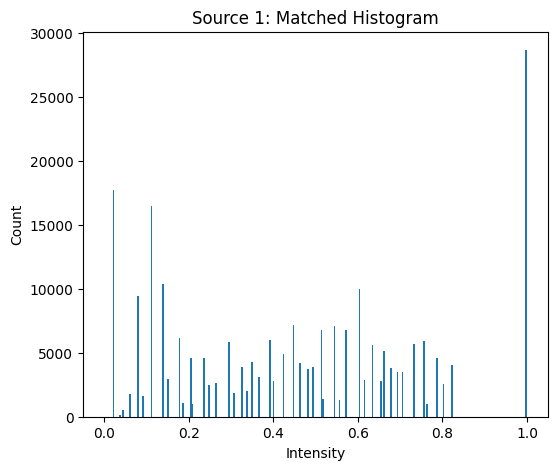Src1 Matched Hist
Part 2(d) — DoG vs Gaussian→Derivative
Both paths use the same operator; derivatives shown with symmetric rescale.
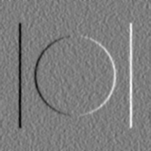Img1 Ix (Naive)
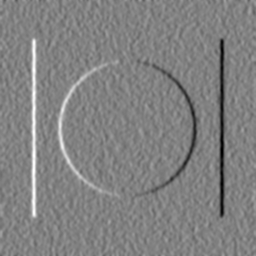Img1 Ix (DoG)
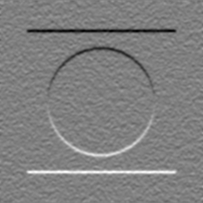Img1 Iy (Naive)
Img1 Iy (DoG)
Part 2(e) — Unsharp Masking
CT — Original
 CT — Sharp (σ=1.3, α=2)
Moon — Original
CT — Sharp (σ=1.3, α=2)
Moon — Original
 Moon — Sharp (σ=1.3, α=4)
Moon — Sharp (σ=1.3, α=4)
Part 3 — Question 1: PM Implementation & Parameter Study
Exponential Conductance
Img1 Exp K=0.05, 5 iters
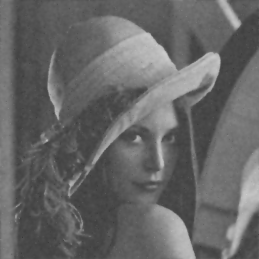Img1 Exp K=0.1, 15 iters
Img1 Exp K=0.2, 30 iters
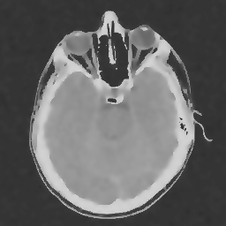Img2 Exp K=0.1, 15 iters
Reciprocal Conductance
Img1 Recip K=0.05, 5 iters
Img1 Recip K=0.1, 15 iters
Img1 Recip K=0.2, 30 iters
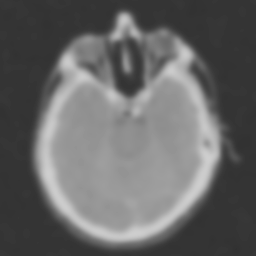Img2 Recip K=0.2, 30 iters
Part 3 — Question 2: Comparison with Gaussian
Img1 PM Exp (K=0.1, 15 iters)
 Img1 PM Recip (K=0.2, 30 iters)
Img1 Gaussian σ=1.2
Img1 PM Recip (K=0.2, 30 iters)
Img1 Gaussian σ=1.2
Discussion & Answers
2(a) Equalization: What changed?
2(c) Matching: Notes
2(d) DoG vs Gaussian→Derivative
2(e) Sharpening
Part 3 (Q1 & Q2)